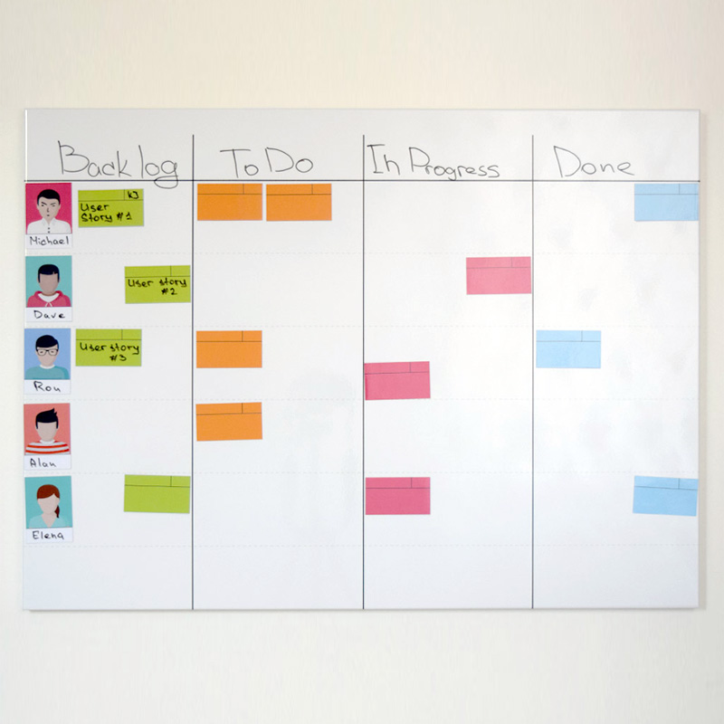
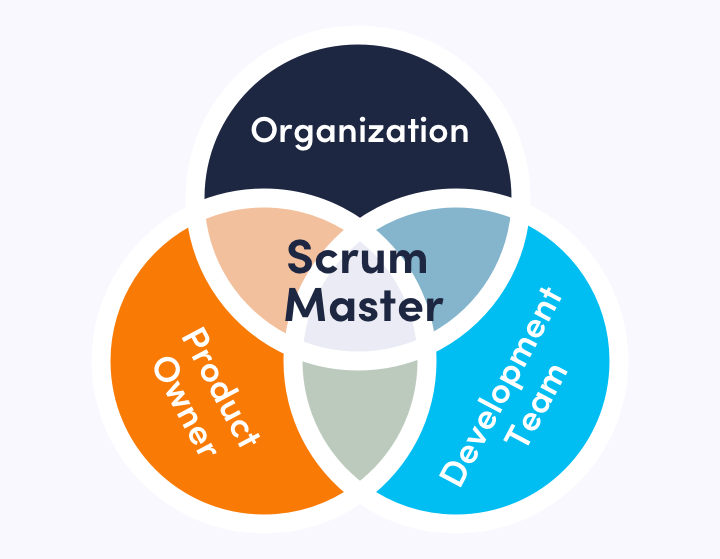
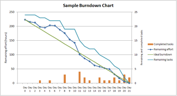

Букин Д.Ю., 3ИВТ(2)
Букин Д.Ю., 3ИВТ(2)
Одно из 5 Мероприятий Скрама, которое является контейнером для других мероприятий.
Спринт — промежуток времени, достаточный для выполнения запланированной совокупности операций SCRUM, целью которой является создание инкремента бизнес-продукта.
Спринты — это короткие регулярные циклы работы длиной не более четырех недель. Спринты должны быть достаточно короткими, чтобы команда не теряла концентрацию, и при этом достаточно длинными, чтобы поставлять значимый инкремент работы.
Доска Спринта, часто называемая «Скрам-доской» или просто «Доской задач», — это инструмент визуализации Элементов Бэклога Спринта на протяжении Спринта. Доска управляется Разработчиками и отражает все элементы, которые нужно сделать, работа над которыми ведётся в данный момент и которые уже завершены в рамках текущего Спринта. Колонки доски могут называться «Сделать», «В работе», «Готово» или иметь аналогичные названия.

Владелец продукта (Product Owner) - человек, который отвечает за достижение максимальной ценности продукта.
Scrum-мастер — это роль, которая объединяет все элементы и обеспечивает эффективную реализацию методики Scrum.

Артефакты Scrum (Scrum Artifacts) - ключевая информация, которую должна знать Scrum команда. Артефакты представляют собой работы и ценности.
Реальный результат работы по итогам одного спринта. В данном случае речь может идти о внедрении новой функции на сайт или мобильное приложение. Главная задача — показать пользователям, что задача решена вовремя, что позволит поддерживать обратную связь и планировать дальнейшую работу по совершенствованию продукта.
Планирование спринта (Sprint Planning) — это событие в scrum, в рамках которого определяется объем работы на следующий спринт и критерии выполнения этой работы
Product Backlog — Бэклог продукта: Невыполненная работа по продукту представляет собой упорядоченный список работ, которую необходимо выполнить для того, чтобы создавать, поддерживать и сохранять продукт. Управляется владельцем продукта.
Аннотация спринта: временной промежуток не больше 4-х часов, который используется при завершении работы над каждым спринтом. Заинтересованные стороны и скрам команды используют этот термин, для проверки прироста функционала по-результатам проведенного спринта, а также комплексной оценки влияния выполненных задач на общий прогресс и обновление списка невыполненных работ по продукту (бэклога) в целях максимизации ценности следующего периода.
Диаграмма, демонстрирующая количество сделанной и оставшейся работы относительно времени на разработку проекта называется диаграммой сгорания (Burndown chart).
Данные диаграммы необходимо ежедневно обновлять, чтобы в реальном времени показывать подвижки и издержки в работе над спринтом и проектом, доступные для всех членов SCRUM-команды: скрам-мастера и владельца продукта.
Диаграмма сгорания работ для спринта — показывает сколько задач сделано и сколько ещё остаётся сделать в текущем спринте.